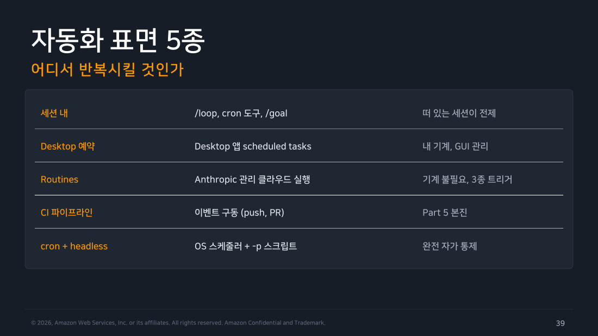
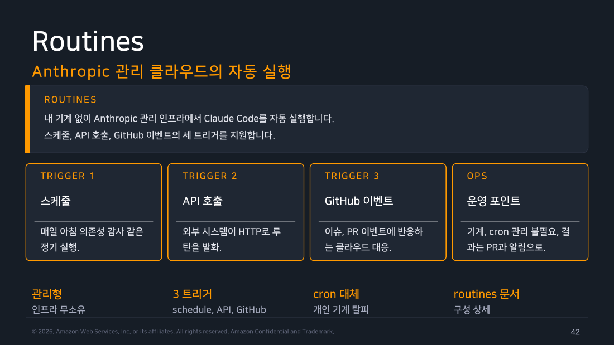
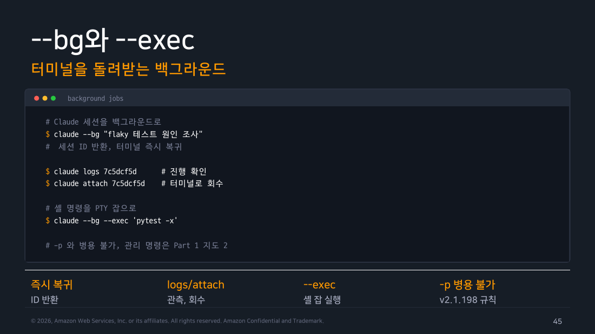

Part 4 — 스케줄과 자동 실행¶
한 줄 요약¶
자동화에서는 명령보다 먼저 무엇이 작업을 깨우는지, 어디서 도는지, 어떻게 살피고 멈출지를 정합니다. 이 세 가지가 정해지면 /loop·/goal·cron·Routines·CI·--bg 중에서 무엇을 쓸지도 자연스럽게 좁혀집니다.
왜 알아야 하나¶
매일 아침 9시에 어제 머지된 PR을 요약하는 작업을 만든다고 해 봅시다. 가장 손에 익은 도구는 cron입니다. 노트북 crontab에 0 9 * * * 한 줄을 넣으면 끝날 것 같습니다.
처음부터 다섯 가지를 비교할 필요는 없습니다. 먼저 수동으로 한 번 실행합니다. 내 컴퓨터에서 정시에 실행해야 하면 cron을, PR 같은 사건에 실행해야 하면 CI를 고릅니다. cron은 운영체제가 정한 시각에 내 컴퓨터에서 명령을 실행하는 스케줄러이고, 그 결과로 해당 시각에 로그·결과 파일이 생깁니다. CI는 저장소 이벤트에 따라 별도 러너에서 명령을 실행합니다. --bg는 지금 시작한 대화형 세션을 터미널 밖에서 계속 돌리는 기능이지, 정해진 시간에 깨우는 스케줄러는 아닙니다.
하지만 실제로 걸어 두면 문제가 생깁니다. 첫날 9시에는 노트북이 잠들어 있어 아무것도 실행되지 않았습니다. 다음 날에는 이전 실행이 끝나기도 전에 새 실행이 겹쳐 같은 요약이 두 번 올라왔습니다. 출장을 가서 시스템 시간대가 바뀌자 이번에는 새벽 3시에 실행됐습니다. 한 달쯤 뒤 인증이 만료되자 아무 알림 없이 실패하기 시작했습니다.
이 네 가지는 cron 문법을 몰라서 생긴 문제가 아닙니다. 이 작업을 누가 깨워야 하는지 정하지 않은 채 익숙한 도구부터 골랐기 때문입니다. 자동화 수단은 같은 명령의 여러 별칭이 아니라 서로 다른 운영 책임을 지는 선택지입니다. 무엇을 고르느냐에 따라 노트북이 꺼져 있을 때, 실행이 겹칠 때, 실패를 알아채야 할 때의 대응이 달라집니다.
1. 먼저 실행 주체를 고른다¶
그래서 명령을 고르기 전에 무엇이 이 작업을 깨우는지부터 정합니다. 답에 따라 선택지가 갈립니다.
Routines는 클라우드의 시계가 깨우는 제품 기능입니다. /loop는 열린 대화에서 같은 프롬프트를 일정 간격으로 다시 실행하고, /goal은 Claude가 멈추기 전에 확인할 완료 조건을 정합니다. /goal은 대화형 세션뿐 아니라 -p 단발 실행에서도 쓸 수 있습니다. cron·Routines·CI·--bg는 모두 자동처럼 보이지만 실행 주체와 시작 시점이 다릅니다. 처음 자동화에는 수동 실행 뒤 cron이나 CI 하나만 더해도 충분합니다.
- 열린 대화에서 같은 작업을 다시 깨운다 →
/loop: 정한 간격마다 같은 프롬프트를 반복합니다. 새 대화에서는 끝나지만, 만료 전/looptask는--resume또는--continue에서 복원될 수 있습니다. - 멈추기 전에 완료 조건을 확인한다 →
/goal: 대화형 세션이나-p단발 실행에서 목표 조건을 만족할 때까지 진행합니다. 정시 스케줄러가 아니라 종료 조건을 정하는 기능입니다. - 내 머신의 시계가 깨운다 → cron: 운영체제 스케줄러에 맡기는 익숙한 방법입니다. 대신 앞에서 본 네 가지 문제, 즉 꺼진 머신·실행 겹침·시간대·조용한 실패를 모두 직접 막아야 합니다.
- 클라우드의 시계가 깨운다 → Routines: 여기서 Routines는 내 컴퓨터가 아니라 Anthropic이 관리하는 클라우드에서 정해진 일정에 따라 실행되는 방식입니다. 노트북이 꺼져 있거나 닫혀 있어도 일정은 지켜지므로, cron의 “내 머신이 깨어 있어야 한다”는 전제가 사라집니다.
- 코드 변경이나 PR 같은 사건이 깨운다 → CI: 실제 조건이 매일이 아니라 푸시될 때마다라면, 시계가 아니라 사건이 트리거여야 합니다. 시계로 흉내 내면 늦게 실행되거나 헛돌 수 있습니다.
- 내가 지금 시작하되 터미널을 붙잡지 않는다 →
--bg: 실측 도움말에 따르면--bg는 세션을 background로 시작하고 ID를 즉시 출력하며,attach,logs,stop,rm이 그 ID를 받습니다. 깨우는 주체는 여전히 나이므로 스케줄러가 아니라 실행 위치를 옮기는 선택입니다.
flowchart TD
A{"무엇이 실행을 깨우나?"} -->|"코드/PR 이벤트"| B["CI"]
A -->|"대화 중 반복"| C["/loop"]
A -->|"완료 조건 추적"| G["/goal"]
A -->|"내 머신의 정시 작업"| D["cron + 잠금 + 시간대"]
A -->|"클라우드 상시 작업"| E["Routines"]
A -->|"지금 시작해 나중에 붙기"| F["--bg + logs/attach"]
style A fill:#e3f2fd,stroke:#1976d2,color:#000
style B fill:#e8f5e9,stroke:#388e3c,color:#000
style C fill:#fff3e0,stroke:#ef6c00,color:#000
style D fill:#f3e5f5,stroke:#7b1fa2,color:#000
style E fill:#e0f2f1,stroke:#00796b,color:#000
style F fill:#e3f2fd,stroke:#1976d2,color:#000
style G fill:#fff3e0,stroke:#ef6c00,color:#000
▲ 교재 슬라이드 39 — 자동화 표면 5종
2. background는 관측 가능해야 한다¶
셸 명령 뒤에 &를 붙여 본 적이 있다면 그 다음이 답답하다는 것도 알 것입니다. 프로세스는 분리되지만, 지금 무엇을 하는지 확인할 창구가 없습니다. 결국 출력 파일을 뒤지거나 ps로 살아 있는지만 확인하게 됩니다.
--bg가 다른 점은 여기입니다. --bg는 비동기로 실행할 뿐 아니라, 나중에 다시 접근할 수 있는 작업 ID를 만듭니다. ID가 있으면 작업과 다시 오갈 수 있습니다. claude agents는 실행 중인 작업 목록을 보여 주고, claude logs <id>는 출력, claude attach <id>는 작업과의 대화, claude stop <id>는 중지를 맡습니다. 아래 실습에서 띄우기부터 중지까지 확인했습니다.
교재도 이 대목에서 Routines와 --bg를 나란히 설명합니다. 하나는 내 컴퓨터 없이 돌고, 다른 하나는 내 컴퓨터에서 돌되 터미널을 붙잡지 않습니다. 함께 보면 차이가 선명합니다.

▲ 교재 슬라이드 42 — Routines

▲ 교재 슬라이드 45 — --bg와 --exec
현장 메모
cron에는 겹침 방지 락, 절대 경로, 고정된 PATH, UTC 또는 명시한 시간대, 실패 알림이 필요합니다. “매일 7시”만으로는 운영 계약이 되지 않습니다.
직접 해보기¶
실행 환경: macOS 26.6.2 / Claude Code 2.1.251 / 2026-08-29. 격리한 스크래치 저장소에서 --safe-mode로 실행했습니다.
--bg로 띄우고, 목록에서 찾고, 멈추기¶
먼저 습관대로 -p를 붙였다가 거절당했습니다.
$ claude --bg -p 'src/pay.js 개선점 세 가지' --safe-mode
--bg and --print conflict: --print never starts the interactive session that `claude agents` attaches to, so the job would be unattachable. The prompt is the positional — drop --print: `claude --bg '<task>'`.
거절 메시지는 앞 절의 내용을 그대로 보여 줍니다. -p는 답만 출력하고 끝나므로 나중에 붙을 세션이 남지 않습니다. 그러면 --bg가 ID를 줘도 쓸 수 없습니다. 프롬프트를 위치 인자로 옮기니 곧바로 ID와 후속 명령 네 줄을 돌려줬습니다.
$ claude --bg 'src/pay.js를 읽고 개선점 세 가지를 번호 매겨 정리해줘' --safe-mode
backgrounded · cd44ce18
claude agents list sessions
claude attach cd44ce18 open in this terminal
claude logs cd44ce18 show recent output
claude stop cd44ce18 stop this session
다음으로 이 작업을 목록에서 찾았습니다. claude agents만 실행하면 TTY, 즉 사람이 보는 대화형 터미널이 필요합니다. 스크립트에서 쓰려면 --json을 붙여야 하며, --cwd를 함께 주면 특정 경로에서 시작한 작업만 추릴 수 있습니다.
스크립트를 짤 때 우선 볼 필드는 두 개입니다. 후속 명령에 넘길 id와 작업 종료 여부를 알려 주는 state입니다. 아래에서는 이 둘을 포함해 식별에 쓰는 필드만 추렸습니다.
$ claude agents --json --cwd "$PWD" | jq '[.[] | select(.kind=="background") | {id, name, status, state, sessionId}]'
[
{
"id": "cd44ce18",
"name": "analyze pay.js improvements",
"status": "idle",
"state": "done",
"sessionId": "cd44ce18-93d2-4913-b5e3-6c48812d1ddc"
}
]
여기서 id와 sessionId가 따로 있다는 점이 헷갈릴 수 있습니다. 이 실측에서 id는 cd44ce18 같은 짧은 형태였고 sessionId는 같은 작업의 전체 UUID였습니다. attach·logs·stop 예시에는 짧은 id를 사용했습니다. 현행 문서는 short ID 예시를 제공하지만 full UUID를 절대 받지 않는다는 규칙까지 보장하지는 않습니다. 자동화에서는 대상 버전의 지원 형식을 확인해야 합니다. jq의 select(.kind=="background")도 장식이 아니라 필요한 조건이며, 이유는 조금 뒤 메모에 적었습니다.
참고 — 나머지 필드
항목에는 name, pid, cwd, startedAt도 함께 실려 옵니다. name은 지시하지 않아도 CLI가 프롬프트를 요약해 붙인 값이고, 나머지는 프로세스나 시작 시점을 추적할 때 씁니다. 처음 스크립트를 짤 때는 몰라도 됩니다.
출력을 확인하려고 claude logs를 실행했는데 예상과 달랐습니다. v2.1.251 / 2026-08-29 실측에서는 사람이 읽을 문장이 아니라 터미널 화면 자체가 이스케이프 시퀀스까지 포함해 나왔습니다.
$ claude logs cd44ce18 > logs.txt
$ wc -c < logs.txt
9890
$ wc -l < logs.txt
0
$ tr -cd '\033' < logs.txt | wc -c
777
9,890바이트 안에 줄바꿈은 한 번도 없고 ESC 문자만 777개입니다. 화면을 지우고 커서를 옮겨 가며 그린 TUI 프레임을 그대로 받아 적은 결과입니다.
작업이 끝난 뒤 중지하면 목록이 비워집니다. 띄우기, 조회, 출력 확인, 중지까지 한 흐름으로 확인할 수 있습니다.
직접 해보고 알게 된 것
v2.1.251 / 2026-08-29에서 claude logs <id>는 터미널 화면 덤프처럼 보였습니다. ANSI를 벗겨 내도 커서 위치 지정 때문에 글자 순서가 뒤엉켰습니다. 현행 공식 문서는 recent output만 설명하므로 이 형식을 일반 계약으로 쓰지 않습니다. 이 환경에서는 logs와 attach를 사람이 눈으로 확인할 때 쓰고, 기계가 읽을 결과가 필요하면 처음부터 -p --output-format json으로 실행했습니다.
직접 해보고 알게 된 것
claude agents --json이 배열로 돌려주는 항목에는 background 작업뿐 아니라 지금 이 터미널에서 실행 중인 대화형 세션("kind": "interactive")도 섞여 나옵니다. 스크립트에서 “내가 띄운 백그라운드 작업”만 세려면 jq '[.[] | select(.kind=="background")]'처럼 걸러야 합니다. 그러지 않으면 자기 자신까지 세게 됩니다.
/loop와 /goal — 나란히 놓고 보니 역할이 달랐다¶
교재는 /loop와 /goal을 나란히 소개합니다. 이름만 보면 같은 기능을 다르게 부르는 것처럼 보여서, 실제 차이를 확인해 보고 싶었습니다.
/loop는 같은 프롬프트를 일정한 간격에 다시 실행합니다. 간격은 직접 정하거나 Claude가 고를 수 있습니다. 열린 세션이 끝나면 새 대화에서는 끝나지만, 만료 전 task는 --resume 또는 --continue에서 복원될 수 있습니다. 이번에는 tmux로 대화형 세션을 열어 직접 확인했습니다. 대상은 eslint 경고 두 개(no-unused-vars, eqeqeq)가 남은 app.js입니다.
❯ /loop npx eslint@8.57.0 app.js 경고가 0이 될 때까지 app.js를 고쳐줘
Read 3 files, listed 1 directory, ran 1 shell command
⏺ 2 warnings found: unused variable and == instead of ===. Fixing both.
⏺ Update(app.js)
⎿ Added 1 line, removed 2 lines
1 function add(a, b) {
2 - var unused = 42;
3 - if (a == b) {
2 + if (a === b) {
3 return a + b;
4 }
5 return a - b;
⏺ ESLint now reports 0 warnings/errors (exit 0). Loop complete, no further
iterations needed.
✻ Churned for 23s · done
한 번 만에 목표를 채우고 멈췄습니다. /loop는 원래 정한 간격마다 프롬프트를 다시 실행하지만, 첫 실행에서 바로 고쳐져 다음 간격까지 기다릴 필요가 없었습니다. 그래서 Claude가 다음 예약을 걸지 않고 끝냈고, 이번에는 다음 실행 시점을 지켜볼 기회가 없었습니다.
같은 파일에서 /goal도 써 봤습니다. 슬래시 자동완성에 Set a goal Claude checks before stopping이라는 설명으로 따로 등록된 점부터 힌트였습니다.
❯ /goal npx eslint@8.57.0 app.js 경고 0개
⎿ Goal set: npx eslint@8.57.0 app.js 경고 0개
⏺ Goal acknowledged: npx eslint@8.57.0 app.js warnings at 0. Already
verified — exits clean with no output, condition is met.
✔ Goal achieved (8s · 1 turn · 288 tokens)
/goal을 걸면 매 턴이 끝날 때마다 별도의 작고 빠른 모델이 조건 충족 여부를 판정하고, 충족하지 못했으면 새 턴을 시작합니다. 조건을 채울 때까지 스스로 턴을 반복하는 쪽은 오히려 /goal이었습니다. -p와도 무관하지 않았습니다. 공식 문서에 claude -p "/goal ..." 예시가 있어 같은 조건으로 재현해 봤습니다.
$ claude -p "/goal npx eslint@8.57.0 app.js 경고 0개" --safe-mode --output-format json \
| jq '{result,num_turns,total_cost_usd}'
{
"result": "ESLint already reports 0 warnings on `app.js` — no changes needed. Goal met.",
"num_turns": 4,
"total_cost_usd": 0.0457716
}
실제로 -p 한 번으로 목표 판정까지 끝까지 실행됐습니다. 비용 집계(modelUsage)에는 실제 작업을 한 claude-sonnet-5와 별도로 조건을 판정한 claude-haiku-4-5가 함께 기록됐습니다. 조건 판정은 별도 모델이 맡는다는 뜻입니다.
직접 해보고 알게 된 것
처음에는 /loop가 능동적으로 반복하고 /goal은 한 번만 확인한다고 짐작했지만, 실제로는 반대에 가까웠습니다. 조건을 채울 때까지 새 턴을 계속 시작하는 것은 /goal이고, /loop는 같은 프롬프트를 시간 간격으로 다시 실행하는 스케줄러입니다. /loop task는 만료 전 재개 시 복원될 수 있습니다. /goal은 -p 한 번으로 조건 판정까지 실행되므로, 이번 실습에서는 /loop에만 tmux가 필요했습니다.
이번엔 터미널이 아니라 웹에서 이어가 보려다 막혔다 — Remote Control¶
여기까지는 모두 터미널 안에서 끝나는 이야기였습니다. 이번에는 터미널에서 시작한 세션을 자리를 뜬 뒤 브라우저에서 이어 받아 보고 싶었습니다. 이때 쓰는 기능이 Remote Control입니다.
상대인 웹·모바일 화면이 있어야 하는 기능이라, 처음에는 터미널만으로 재현하려다 막혔습니다. claude --remote-control을 켰지만 이어 받을 때 필요한 페어링 코드가 나타나지 않았습니다.
세션은 정상적으로 뜨는데 페어링만 되지 않아 처음에는 연결할 상대가 없어서 그런가 생각했습니다. 원인은 달랐습니다. 이 환경은 CLAUDE_CODE_OAUTH_TOKEN_FILE을 사용하고 있었습니다. 공식 문서에 따르면 Remote Control에는 eligible claude.ai 로그인이 필요하고 API 키 인증은 지원하지 않습니다. setup-token과 OAuth 환경변수의 내부 권한 범위는 이 문서에서 일반 계약으로 단정하지 않습니다.
unset CLAUDE_CODE_OAUTH_TOKEN_FILE 후 /login으로 계정에 다시 로그인하고 나서야 세션이 정상적으로 페어링 URL을 냈습니다.
$ unset CLAUDE_CODE_OAUTH_TOKEN_FILE CLAUDE_CODE_OAUTH_TOKEN
$ claude --remote-control
/remote-control is active · Continue here, on your phone, or at
https://claude.ai/code/session_01XHhhRDNgjELZnsnqkBMY1k
이 URL을 다른 브라우저에서 열고 “지금 몇 시야?”라고 보내자, 로컬 머신이 실제로 도구를 호출(Got current system time)해 응답했습니다. 세션 이름도 대화 내용에 맞춰 자동으로 바뀌었습니다. 공식 문서의 “명시적 이름이 없으면 첫 프롬프트로 제목을 갱신한다”는 규칙과 같았습니다.
직접 해보고 알게 된 것
Remote Control이 안 되는 것과 연결 상대가 없어서 안 되는 것은 다른 문제였습니다. v2.1.251 / 2026-08-29의 이 환경에서는 CLAUDE_CODE_OAUTH_TOKEN_FILE을 지우고 /login으로 바꾸자 페어링됐습니다. 이 관찰을 모든 setup-token/OAuth 환경변수의 세부 계약으로 일반화하지 않습니다. Remote Control을 쓰기 전에는 공식 로그인 요건과 실제 인증 상태를 함께 확인합니다.
페어링이 성립하면 반대 방향도 이해하기 쉽습니다. --teleport는 이렇게 페어링된 세션을 로컬로 다시 불러오는 동작입니다.
흔한 오해 바로잡기¶
“background면 스케줄러가 필요 없다”는 오해가 있습니다. background는 지금 시작한 작업을 분리하는 방식이고, 언제 다시 시작할지는 cron·Routine·CI 같은 스케줄·이벤트 주체가 결정합니다.
“/loop와 /goal은 이름만 다른 같은 기능이다”도 아닙니다. 위 실습에서 차이가 드러났습니다. /goal은 조건이 채워질 때까지 새 턴을 시작하며 반복하고 -p로도 그대로 실행됩니다. /loop는 같은 프롬프트를 시간 간격으로 다시 실행하며, 만료 전 task는 재개 시 복원될 수 있습니다.
정리¶
처음의 cron 실패 네 가지는 모두 같은 곳에서 시작했습니다. “언제 돌릴까”를 먼저 정하고 “누가 깨우는가”를 나중에 생각한 것입니다. 순서를 바꾸면 답이 빨리 나옵니다. 내 대화, 내 머신의 시계, 클라우드의 시계, 코드 이벤트 중 누가 깨우는지와 내 노트북·클라우드 중 어디서 도는지, ID와 실패 알림으로 어떻게 관측하고 멈출지를 정합니다. 그다음 /loop, cron, Routines, CI, --bg 가운데 알맞은 명령을 고릅니다.
출처¶
- Claude Code Deep Dive Workshop — Chapter 5 / Part 4: 스케줄과 자동 실행 (슬라이드 39~47)
- 공식 문서: CLI reference, Scheduled tasks, Remote Control